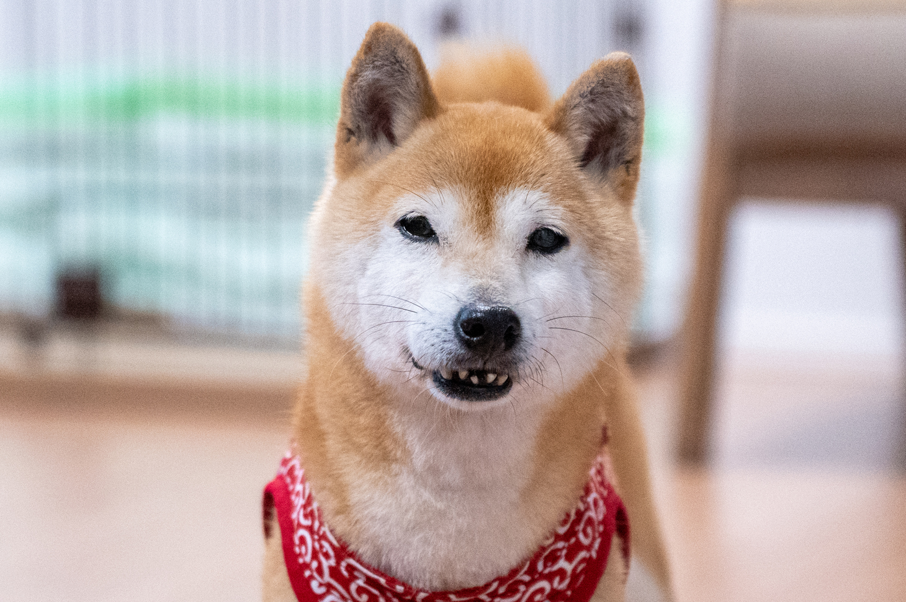

♡ワンちゃんの犬種（柴犬編）♡

小柄ながら頑丈な体と、飼い主さまに忠実で番犬向きな性格は、忠犬ハチ公でも有名ですね。 また、まん丸の目と太い尾、そして凛々しい表情は柴犬ファンにはたまらないポイントです。 そんな国内外で幅広く愛される柴犬をご紹介します。
柴犬ってどんな犬？
柴犬は縄文時代より、日本人と一緒に暮らしてきた日本古来の犬です。 昔は本州各地で鳥やウサギを狩る猟犬として飼われていました。日本犬保存会が創設され、日本犬が保護されるようになり、1936年（昭和11年）に柴犬が日本の天然記念物に指定されました。柴犬、秋田犬、甲斐犬、紀州犬、四国犬、北海道犬の6種の日本犬のうち、飼育頭数は柴犬が圧倒的に多いことで知られます。小柄ながら頑丈な体と、飼い主さまに忠実で番犬向きな性格は、国内外で幅広く愛されています。
柴犬の特徴
ピンと立った耳、キリッとした顔立ち、くるんと丸まった尻尾が特徴的。国の天然記念物に指定されている日本犬種のひとつで、被毛は、硬い上毛と、やわらかい下毛からなる2重構造（ダブルコート）になっており、硬い上毛は皮膚を守る役割を、やわらかい下毛で保湿、保温の役割を持っています。
柴犬の性格
賢く勇敢な性格です。独立心があり、我慢強い反面、頑固なところもあるので、子犬の頃からきちんとしつけておきましょう。見知らぬ人に対しては警戒して吠えることもありますが、飼い主には忠実です。猟犬気質があるため、体を動かしたり、オモチャで遊ぶことが好きです。一方で警戒心が強いため、きちんとトレーニングをしないと他の人を攻撃してしまうなどの事故を起こす可能性がありますので、注意しましょう。
柴犬の飼育のポイント
柴犬は忠誠心が強く賢いですが、頑固な気質のため根気強くしつけを行いましょう。